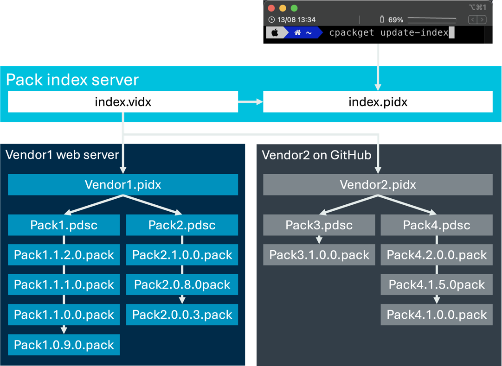
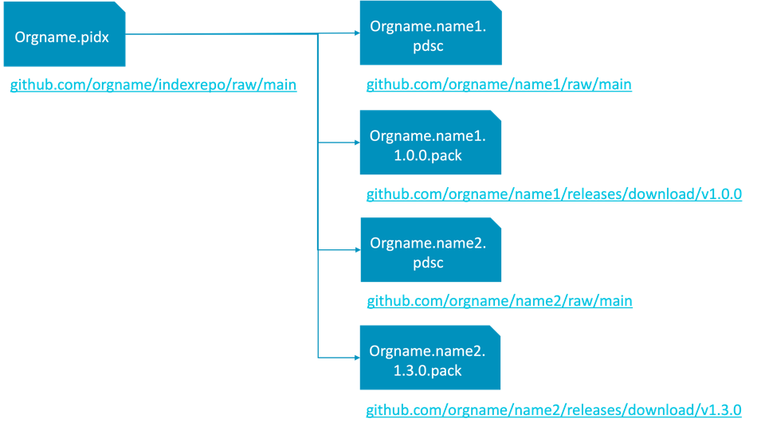

发布CMSIS-Pack¶
在开始分发软件包之前，请确保它不包含错误。使用检查 CMSIS-Packs 部分中描述的工具进行验证。验证 PDSC 文件和包不包含错误后，基本上有两个分发软件包的选项：
- 本地安装
- 网页下载
以下各节假定您熟悉 CMSIS-Toolbox，尤其是 cpackget。
检查CMSIS-Packs¶
软件包是包含 PDSC 文件和其他内容的 ZIP 文件。ZIP 文件需要一致，并且必须根据 XML 模式文件 （PACK.xsd） 验证其中的 PDSC 文件。可以使用一个开源检查工具来帮助您完成这两项任务：用于生成包脚本的 Bash 库。在将 PDSC 文件提交到任何包索引服务之前，请确保已使用它来验证 PDSC 文件和包内容。该库可以在所有主要主机作系统上使用，也可以在 GitHub actions 中运行。
本地安装¶
分发软件包的最简单方法是将其附加到电子邮件或使用其他电子分发方式（例如使用文件服务器）。使用 cpackget（CMSIS-Toolbox 附带的包管理工具）在 PC 上安装软件包：
cpackget add vendor.packname.version.pack
如果 PDSC 文件不包含有效<url>元素，则需要手动安装才能更新软件包。否则，cpackget 可以检查服务器或本地计算机上<url>指定的更新。
网页下载¶
如果您想公开您的包，您需要将它们托管在 Web 上。对于发布包，可以使用以下选项：
- 自托管包
- GitHub 托管包
下图显示了在使用包索引服务时如何发布包：

Pack 托管和索引服务
当您运行命令 cpackget update-index 时，该工具将从包索引服务器查询包索引文件 （index.pidx）。此文件是使用供应商索引文件 （index.vidx） 中的 vidx2pidx 工具生成的，该文件指向所有已知的 <vendor>.pidx 和独立的 PDSC 文件。
PIDX 文件允许您更改包版本并将包添加到分发列表。PIDX 文件中引用的所有包都将被处理和验证。只有无错误的包才能通过网页和开发工具提供。
自托管包¶
任何 Web 服务器都可用于托管软件包（由 PDSC 文件中的<url>元素指定）。在此位置，应存在以下文件：
<vendor>.<name>.pdsc[必需]：包描述文件。<vendor>.<name>.<version>.pack[必需]：pack 文件，其中<version>引用 PDSC 文件中指定的最新版本。<vendor>.pidx[可选]：列出由供应商托管和维护的所有包（请参阅包索引文件 （PIDX））
PDSC 文件部分中列出的所有先前版本<releases>也应出现在<url> 中。这允许用户恢复更新或下载软件包的先前版本（用于维护目的）。
<vendor>.pidx 允许您一次将多个包发布到包索引服务。
Tip
<vendor>.<name>.PDSC中的<url>元素 是这些服务检查新包的位置。在此<url>位置，一个（未版本化）<vendor>.<name>.PDSC文件和（版本化的）<vendor>.<name>.<version>.pack必须可用。<url>是下载包的页面。这意味着，如果 URL 或 PDSC/包文件不可用，用户将无法下载包。- 当有新的 PDSC/pack 文件可用时，更新版本号非常重要，否则 Pack Index Service 将无法识别该包已更改。
- 旧版本
<vendor>.<name>.<version>.pack应该仍然可用。
GitHub 托管包¶
如果您在 GitHub 上公开包，则可以使用 infrastructure 来托管包。建议的方法如下（请注意，在此示例中， <orgname> 等于其他示例中的<vendor> 。我们在这里使用<orgname>，因为这是 GitHub 上的命名法）：
- 为 PIDX 文件创建存储库，例如 github.com/orgname/indexrepo。PIDX 文件应命名为
<orgname>.pidx。 - 为每个包创建单独的存储库，例如：
- github.com/orgname/name1
- github.com/orgname/name2
- 在每个存储库的 main 分支的顶层，您需要有一个
<orgname>.<nameX>.pdsc文件。 - 发布包后，将
<orgname>.<nameX>.<version>.pack文件添加到 release assets 中, 这将用作包的下载位置。
此图显示了 GitHub 上使用 pack 版本 1.0.0 和 1.3.0 的示例设置：

GitHub 上的 PIDX 文件¶
供应商（组织名称）PIDX 文件如下所示：
<?xml version="1.0" encoding="UTF-8" ?>
<index schemaVersion="1.0.0" xs:noNamespaceSchemaLocation="PackIndex.xsd" xmlns:xs="http://www.w3.org/2001/XMLSchema-instance">
<vendor>orgname</vendor>
<url>https://github.com/orgname/indexrepo/raw/main/</url>
<timestamp>2024-08-22T15:00:10.7300074+00:00</timestamp>
<pindex>
<pdsc url="https://github.com/orgname/name1/raw/main/" vendor=”orgname" name=”name1" version="1.0.0"/>
<pdsc url="https://github.com/orgname/name2/raw/main/" vendor=”orgname" name=”name2" version="1.0.0"/>
</pindex>
</index>
Tip
更新其中一个包时，只需更改版本号并更新时间戳。所有其他条目保持不变。请确保使用此机制仅提供发布质量包。您可以随时构建包的本地版本以进行测试。
GitHub 上的 PDSC 文件¶
一个仓库的 PDSC 文件如下所示：
<?xml version="1.0" encoding="utf-8"?>
<package schemaVersion="1.7.7" xmlns:xs="http://www.w3.org/2001/XMLSchema-instance" xs:noNamespaceSchemaLocation="PACK.xsd">
<vendor>orgname</vendor>
<name>name1</name>
<license>LICENSE</license>
<description>Whatever Pack</description>
<url>https://github.com/orgname/name1/raw/main/</url>
<supportContact>info@orgname.com</supportContact>
<repository type="git">https://github.com/orgname/name1.git</repository>
<releases>
<release version="1.0.0" tag="v1.0.0" date="2024-08-22" url="https://github.com/orgname/name1/releases/download/v1.0.0/orgname.name1.1.0.0.pack">Initial release</release>
</releases>
…
- 将
<url>更改为 PDSC 中最新包文件的位置。 - 在PDSC
<release>中添加具有正确条目的新版本。 - 将包文件附加到release assets。
- 使用最新版本信息更新 PIDX 文件。
Tip
虽然存储库的主分支可用于托管 PDSC 文件，但如果使用专用分支来托管 PDSC 文件，则可以对不需要的更改产生额外的信心。这可以避免在接受拉取请求 （PR） 时无意地中断包位置。
使用包索引服务¶
工具、软件或芯片供应商可能会提供一个 Web 基础结构，其中列出了多个供应商提供的包。Arm 或 IAR 等公司提供此类服务，以向更广泛的开发人员受众提供 CMSIS-Pack。然后，包管理工具可以找到这些包，并将它们的内容列在网站上，例如 Arm 的 CMSIS-Pack 列表。
准备好发布包后，请发送 <vendor>.<name>.pdsc 或 <vendor>.pidx 文件发送到以下电子邮件地址：
- 对于 Arm 工具，请发送电子邮件至 CMSIS@arm.com。
- 对于 IAR 工具，请发送电子邮件至 CMSIS@iar.com。
Arm 使用包信息生成可用软件包的列表。为了生成网站 （https://www.keil.arm.com/packs/） ，将处理以下内容：
- 版本
- 发行说明
- 设备
- 板
- 例子
- 软件组件
- 描述
- Overview.md 文件（如果存在）
此外，数据还用于创建板和设备列表。
该过程最多需要 7 个工作日。如果文件包含任何错误，您将收到通知。否则，信息将添加到索引服务器。强烈建议使用包索引文件 （PIDX） 以提高可维护性。
vidx2pidx 转换工具¶
如果要检查包索引文件 （PIDX） 的内容，可以使用 vidx2pidx 实用程序创建自己的 index.pidx 文件。创建后，您可以将其与 cpackget 一起使用来安装 PIDX 文件中列出的包。
请按照以下步骤运行转化和安装：
- 下载 vidx2pidx。
- 创建
<vendor>.vidx文件。代码示例<index schemaVersion="1.0" xmlns:xs=http://www.w3.org/2001/XMLSchema-instance xs:noNamespaceSchemaLocation="PackIndex.xsd"> <vendor>vendor</vendor> <url></url> <timestamp>2024-08-08T06:30:00</timestamp> <vindex> <pidx vendor="vendor" url="https://github.com/vendor/packrepo/raw/main/"/> </vindex> </index> - Run
创建 index.pidx.
vidx2pidx vendor.vidx - Run
创建新的 Pack 根目录，其中仅包含 index.pidx 中的 Pack。
cpackget init -R packroot index.pidx - Run
cpackget list -p -R packroot - 安装所有列出的软件包
检查是否可以下载和安装所有包。
cpackget add <packID> -R packroot
重新托管包¶
有时，需要重新托管包（将包从一个 URL 移动到另一个 URL）。重新托管意味着更改 PDSC 文件中的<url>元素。要确保 Pack Index Service 找到该 Pack，请遵循以下过程：
- 创建新版本的包：更新
<vendor>.<name>.pdsc文件，其中包含 new<url>（“url_B”） 和<release>具有递增版本的新标记。 - 放一份这个最新的
<vendor>.<name>.pdsc文件 url_B 和 url_A（原始 URL）。 - 将此新的 PDSC 文件添加到更新的
<vendor>.<name>.<version>.pack（需要与 PDSC 文件中的版本号匹配）。 - 复制新的
<vendor>.<name>.<version>.pack仅对 url_B。 - 将 url_A 中的所有先前包复制到 url_B（以便在新位置可用）。
- 通过以下任一方式将新 URL 通知 Arm：
<vendor>使用此包的 url_B 更新 .pidx，或者- 如果您的公司没有维护
<vendor>.pidx，请通过电子邮件发送指向新 PDSC 文件的链接
Tip
- PDSC 文件和所有包版本都需要从相同的新 URL（“url_B”）访问。
- Arm 建议将 url_A 保持活动状态至少 6 个月，以便用户有时间获取更改。请注意，未注意到此更改的用户可能无法找到包更新，一旦url_A变得不可用。
重命名包¶
有时，需要重命名包（例如，因为包供应商和/或其名称已更改）。要确保 Pack Index Service 和工具能够找到该包，请遵循以下过程：
- 新建：
- PDSC 文件替换为更新的
<name>和/或<vendor>，例如 NewVendor.NewName.pdsc。<version>应该从 1.0.0 开始。 - pack 中包含新的 PDSC 文件以及相应的
<name>and/或<vendor>，例如 NewVendor.NewName.1.0.0.pack。
- PDSC 文件替换为更新的
- 新建：
- 旧 PDSC 文件 （Vendor.Name.pdsc） 的版本，带有
<release>新标签（具有更新的版本），其中包含<deprecated>and<replacement>元素。后者指向 “NewVendor.NewName”。 - 旧版本
<vendor>.<name>.<version>.pack文件，其中包含您在上面创建的 PDSC。
- 旧 PDSC 文件 （Vendor.Name.pdsc） 的版本，带有
- 复制：
- 所有四个文件（新的 PDSC 和 pack、更新的旧 PDSC 和 pack）都添加到
该位置。
- 所有四个文件（新的 PDSC 和 pack、更新的旧 PDSC 和 pack）都添加到
打包索引文件¶
CMSIS-Pack 设计为基于 Web 的分发网络。CMSIS-Pack 的每个提供商（也称为供应商）负责托管、维护和发布 CMSIS-Pack 的唯一版本。
CMSIS-Pack 由 <vendor>.<pack name>.<version>.pack 唯一标识。包的所有已发布版本和 PDSC 文件都需要位于<url> 指定的同一 Web 文件夹中。多个不同的包可能位于同一个 Web 文件夹中。
包索引文件 （PIDX）¶
软件包索引文件列出了由供应商托管和维护的所有 CMSIS-Pack。该文件由供应商托管，名称为 <vendor>.pidx。<vendor> 标签需要与文件名匹配。该文件还包含<url>其来源以及<timestamp>上次更新。
供应商有义务在以下情况下更新此文件：
- 添加了一个新包。
- 添加包的新版本。
- 包已弃用。
- 可以替代包。
MyVendor.pidx 示例
<?xml version="1.0" encoding="UTF-8" ?>
<index schemaVersion="1.0.0" xs:noNamespaceSchemaLocation="PackIndex.xsd" xmlns:xs="http://www.w3.org/2001/XMLSchema-instance">
<vendor>MyVendor</vendor>
<url>https://www.MyVendor.com/pack/</url>
<timestamp>2024-01-25T15:00:10.7300074+00:00</timestamp>
<pindex>
<pdsc url="https://www.MyVendor.com/pack/mypack/" vendor="MyVendor" name="MyPack" version="1.1.0"/>
...
</pindex>
</index>
<url>= PDSC 和包所在的 Web 文件夹。<vendor>= 包的供应商。<name>= 包的名称。<version>= 包的最新可用版本的版本号。
托管在 www.keil.com 上的符合 CMSIS-Pack 的包的包索引文件可在此处找到：https://www.keil.com/pack/Keil.pidx。
单个包索引文件的好处是，该文件只需要交换一次，并且可以轮询供应商的更新和添加包。要将供应商的包添加到 www.keil.com 上维护的公共列表中，请向附加文件版本的 <vendor>.pidx发送电子邮件至 CMSIS@arm.com 。
供应商索引文件（VIDX）¶
供应商索引文件列出了来自不同供应商的包索引文件。此信息可用于编译已知包的列表。
MyVendor.vidx 示例
<?xml version="1.0" encoding="UTF-8" ?>
<index schemaVersion="1.0" xmlns:xs="http://www.w3.org/2001/XMLSchema-instance" xs:noNamespaceSchemaLocation="PackIndex.xsd">
<vendor>MyVendor</vendor>
<url>www.MyVendor.com/pack</url>
<timestamp>2024-01-08T10:30:00</timestamp>
<vindex>
<pidx url="http://www.othervendor.com/MyPacks/" vendor="OtherVendor" />
...
</vindex>
<!-- the section below is only intended for the transition until all vendors use the <vendor>.pidx file
<pindex>
<pdsc url="http://www.othervendor2.com/packs/" vendor="OtherVendor2" name="MyPack" version="2.3.0"/>
...
</pindex>
</index>
属于 vendor=“ARM” 和 vendor=“Keil” 的 CMSIS-Pack 的最新索引文件，这些文件托管和维护在此处：https://www.keil.com/pack/Keil.pidx
Arm 还维护了向 Arm 报告的所有符合 CMSIS-Pack 的包的固定列表：https://www.keil.com/pack/index.pidx
供应商索引文件包含对用于编译此摘要索引文件的包索引文件（或可选的 PDSC 文件）的引用，列在 Keil.vidx 文件中，可从此处下载：https://www.keil.com/pack/Keil.vidx
基于这些公开可用的索引文件，每个人都可以平等地创建可用包及其最新版本的索引。
索引架构文件¶
<?xml version="1.0" encoding="UTF-8"?>
<!--
Copyright (c) 2013-2023 ARM Limited. All rights reserved.
SPDX-License-Identifier: Apache-2.0
Licensed under the Apache License, Version 2.0 (the License); you may
not use this file except in compliance with the License.
You may obtain a copy of the License at
http://www.apache.org/licenses/LICENSE-2.0
Unless required by applicable law or agreed to in writing, software
distributed under the License is distributed on an AS IS BASIS, WITHOUT
WARRANTIES OR CONDITIONS OF ANY KIND, either express or implied.
See the License for the specific language governing permissions and
limitations under the License.
$Date: 28. March 2023
$Revision: 1.1.1
$Project: Schema File for Package Index File Format Specification
Package Index file naming convention <vendor>.pidx
Vendor Index file naming convention <vendor>.vidx
SchemaVersion=1.1.1
-->
<xs:schema xmlns:xs="http://www.w3.org/2001/XMLSchema" elementFormDefault="qualified" attributeFormDefault="qualified" version="1.1.1">
<!-- semantic versioning (semver.org) <major>.<minor>.<patch>-<quality> -->
<xs:simpleType name="SemanticVersionType">
<xs:restriction base="xs:string">
<!-- major . minor . patch [[-]quality] [+build] -->
<xs:pattern value="[0-9]+\.[0-9]+\.[0-9]+(\-((0|[1-9]\d*|\d*[a-zA-Z-][0-9a-zA-Z-]*)(\.(0|[1-9]\d*|\d*[a-zA-Z-][0-9a-zA-Z-]*))*))?(\+([0-9a-zA-Z-]+(\.[0-9a-zA-Z-]+)*))?" />
</xs:restriction>
</xs:simpleType>
<!-- some strings are used to construct filenames (e.g. package name). Such names can contain only subset of characters and must not contain neither spaces nor dots. -->
<xs:simpleType name="RestrictedString">
<xs:restriction base="xs:string">
<xs:pattern value="[\-_A-Za-z0-9]+"/>
<xs:pattern value="\S(.*\S)?"></xs:pattern>
</xs:restriction>
</xs:simpleType>
<!-- Vendor index file Description Type -->
<xs:complexType name="VidxType">
<xs:attribute name="url" type="xs:anyURI" use="required"/>
<xs:attribute name="vendor" type="RestrictedString" use="required"/>
<xs:attribute name="date" type="xs:date" use="optional"/>
</xs:complexType>
<!-- Package Description Type -->
<xs:complexType name="PdscType">
<xs:attribute name="url" type="xs:anyURI" use="required"/>
<xs:attribute name="vendor" type="RestrictedString" use="required"/>
<xs:attribute name="name" type="RestrictedString" use="required"/>
<xs:attribute name="version" type="SemanticVersionType" use="required"/>
<xs:attribute name="date" type="xs:date" use="optional"/>
<xs:attribute name="deprecated" type="xs:date" use="optional"/>
<xs:attribute name="replacement" type="RestrictedString" use="optional"/>
<xs:attribute name="size" type="xs:unsignedInt" use="optional"/>
</xs:complexType>
<!-- Package Description file Type -->
<xs:complexType name="PindexType">
<xs:sequence>
<xs:element name="pdsc" type="PdscType" maxOccurs="unbounded"/>
</xs:sequence>
</xs:complexType>
<!-- Vendor vendor's package index file tag -->
<xs:complexType name="VindexType">
<xs:sequence>
<xs:element name="pidx" type="VidxType" maxOccurs="unbounded"/>
</xs:sequence>
</xs:complexType>
<!-- Index description root point (Vendor Index file, Package Index file -->
<xs:element name="index" nillable="true">
<xs:complexType>
<xs:sequence>
<xs:element name="vendor" type="RestrictedString"/>
<xs:element name="url" type="xs:anyURI"/>
<xs:element name="timestamp" type="xs:dateTime" minOccurs="0"/>
<xs:choice minOccurs="1" maxOccurs="2">
<!-- index/list of packs -->
<xs:element name="pindex" type="PindexType"/>
<!-- index/list of vendor index files -->
<xs:element name="vindex" type="VindexType"/>
</xs:choice>
</xs:sequence>
<xs:attribute name="schemaVersion" type="SemanticVersionType" use="required"/>
</xs:complexType>
</xs:element>
</xs:schema>